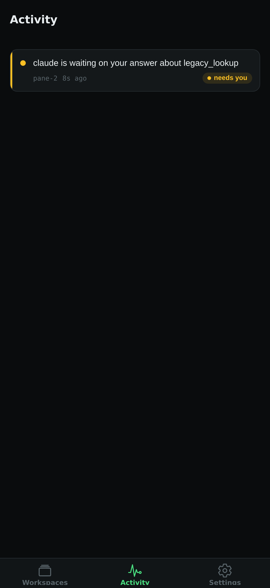

One glance, every workspace
Busy, needs input, done, and failed states stay visible until you visit the pane.
vmux Remote
Keep an eye on every agent, open a live pane, and send the answer from your iPhone or iPad—without routing terminal data through a vmux cloud.



Made for the handoff
Remote mirrors the workspace model you already use in vmux. Browse sessions, see live state, and interact with the exact pane that needs attention.
Busy, needs input, done, and failed states stay visible until you visit the pane.
Send input, use essential control keys, and switch panes without fighting a desktop-sized interface.
Your phone connects to the relay on your host over Tailscale or a local network. There is no vmux account or hosted terminal service.
The relay is opt-in, refuses public all-interface binds, and lets you list or revoke paired devices.
Three steps
Run Tailscale on the host and phone, then start the relay. vmux listens on its Tailscale address when available.
cargo install vmux-tui
vmux relay serve
Use tailscale ip -4 and port 4399.
Run vmux config set relay.enabled true. The next vmux attach starts the managed relay with your session.